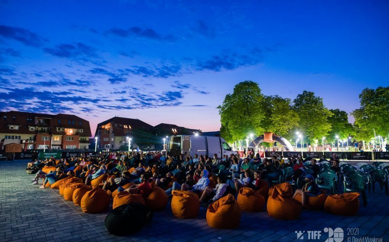
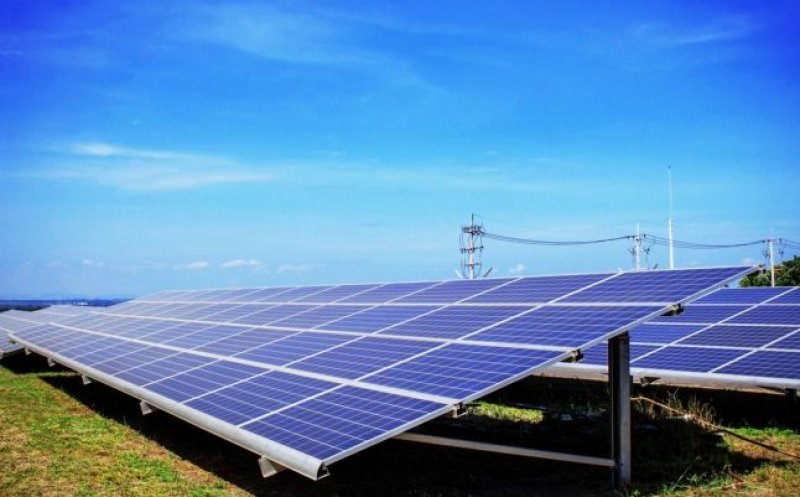

TIFF continuă luni la Florești!
Primarul Pivariu: „Da, ați citit corect” / Tudor Giurgiu va fi prezent

Chiar dacă ediția din acest an a Festivalului Internațional de Film Transilvania (TIFF) s-a încheiat duminică, în această seară, în comuna Florești va rula un film reprogramat din cauza vântului de săptămâna trecută.
Potrivit primarului din Florești, Bogdan Pivariu, este vorba de o proiecție care îl are în rol principal pe Javier Bardem și care a fost desemnat cel mai bun film spaniol la premiile Goya 2022.
„Azi (luni - n.red.) ne vedem la TIFF!!!
Da, ați citit corect. Azi în Florești avem ultima proiecție de film din ediția de anul acesta. TIFF în Florești se încheie cu invitați de seamă. Azi pe scena din Florești avem bucuria să îl avem pe Tudor Giurgiu. Vă invit în număr cât mai mare să îl aplaudăm la scenă deschisă.
Avem azi ocazia să ne arătăm recunoștiința pentru încrederea pe care TIFF a avut-o în comunitatea din Florești atunci că a decis pentru al doilea an ca și Florești este acasa pentru TIFF.
Proiecția de diseară este programată de la 21.45 în Parcul Poligon (reprogramată de la vântul de marți). O comedie smart cu Javier Bardem, Cel mai bun film spaniol la Premios Goya 2022”, a transmis Pivariu.
Acesta este un span
Acesta este un div
LINK:
FULL NEWS
Un nou parc fotovoltaic la Cluj!
A primit VERDE de la urbaniștii județului

Sub denumirea de „CONSTRUIRE PARC FOTOVOLTAIC, ÎMPREJMUIRE, AMENAJĂRI, RACORDURI ȘI BRANȘAMENTE LA R.E.D., SCHIMBARE PARȚIALĂ DE DESTINAȚIE DIN ZONĂ DE LOCUINȚE ÎN ZONĂ INDUSTRIALĂ, OPERAȚIUNI NOTARIALE–COMASARE TERENURI”, proiectul a fost pe ordinea de zi în ședința Comisiei Tehnice de Amenajare a Teritoriului și de Urbanism (C.T.A.T.U) a județului Cluj, de joi, 24 iunie 2022.
Suprafața terenului studiat este de 62.352 metri pătrați. Beneficiarul este Battilani Massimo, care a fost președintele filialei Cluj a UNIMPRESA - Asociaţia întreprinderilor Italiene din România.
Potrivit documentației, terenul de amplasament se află în intravilanul comunei Aghiresu, sat Aghiresu, județul Cluj. Imobilul este de formă neregulată. Terenul este liber de construcții.
„Economic, prin PUZ-ul propus se facilitează dezvoltarea economică a regiunii prin aducerea de activități compatibile cu zona studiată. Social nu se perturbă nici o activitate de locuire sau de alt fel. Zona are un potențial ridicat de dezvoltare datorită amplasării geografice - teren plat, cu posibilitate de orientare spre sud a panourilor fotovoltaice, fără obstacole care să producă umbrire”, se mai arată în documentație.
Proiectul a primit aviz favorabil din partea membrilor CTATU Cluj.
Cu aproximativ două săptămâni în urmă, un alt proiect asemănător a primit undă verde de la urbaniștii județului Cluj.
FUKK NEWS